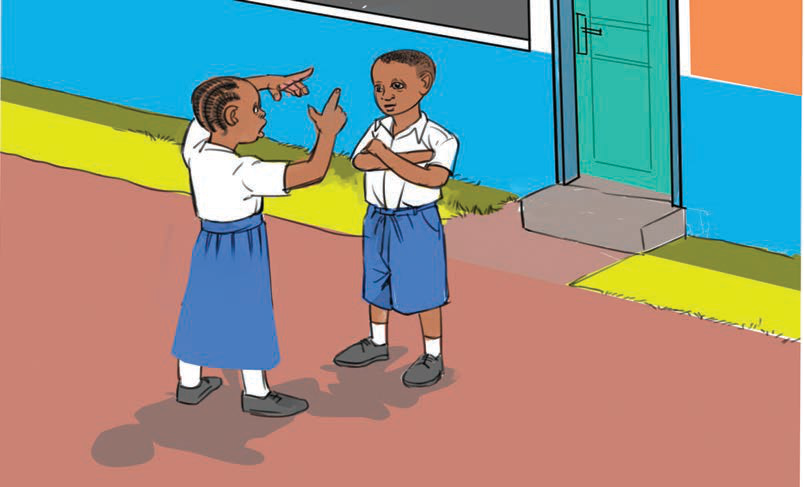

Tunaweza kuwasimulia wenzetu taarifa hizi katika mazingira yetu pale tunapokuwa pamoja kama inavyoonekana katika Kielelezo namba 6.

Kielelezo namba 6. Mwanafunzi akimsimulia mwenzake jambo
Aidha, masimulizi haya huweza kufanyika kwenye mikutano inayofanyika katika mitaa, vijiji na maeneo ya nyumbani.
Tunaweza kusimulia taarifa zinazohusu asili na urithi wa jamii kwa kuandika ili watu wengine wazisome. Tunaweza kuandika taarifa hizi na kubandika katika kuta za matangazo shuleni. Aidha, taarifa hizi huandikwa kwenye vitabu na magazeti. Hii husaidia watu mbalimbali kusoma na kufahamu kuhusu maarifa na ujuzi huu wa asili na maadili yake. Redio na runinga ni miongoni mwa maeneo yatumikayo pia kusimulia taarifa hizi.
Jamii za kale zilitunga nyimbo na hadithi ambazo hadi sasa zinatupa masimulizi kuhusu maarifa na ujuzi wa jamii na maadili yake.